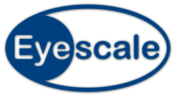

GPU solutions for the multicore age
Eyescale is committed to provide the best software consulting
and development services for 3D visualization software and parallel
applications in today's multicore, multi-GPU world.
People
International R&D software project manager. Spent over twelve years at
Silicon Graphics, Inc. managing research programs and delivering
leading edge technology for high-performance visualization and scalable
graphics architectures. Specialized in collaborative and immersive
environments, parallel and distributed software architectures, OpenGL
programming and Scenegraph Software APIs. Awarded 1998 Golden Nica for
Interactive Art for the development of WorldSkin.
More info:

Engineering Diploma in Computer Science in 1998. Worked in SGI's
Advanced Graphics Division as the technical lead of OpenGL Multipipe
SDK, a toolkit for the development of scalable, parallel visualization
software. Worked with various projects, such as Volumizer, Vizserver,
Compositor and OMP, to unify and extend SGI's multipipe graphics
software offerings. Developed Equalizer as a Researcher at the
Visualization and Multimedia Lab at the University of
Zürich. Specialized in High Performance Visualization, Scalable
Rendering, Application Parallelization and Tuning.
More info:
Products
Eyescale leads the development, provides application development
services and support for
the Equalizer parallel
rendering framework.
We have extensive experience with other visualization software and
hardware, and help you to integrate your application with open source
and commercial solutions such as the OpenSceneGraph, Open Inventor and
NVSG scene graphs as well as the Equalizer, OpenGL Multipipe SDK and
Chromium parallel rendering frameworks.
Services
Eyescale provides developer support for the Equalizer parallel
rendering framework. Our support contracts give your developers
direct access to our expertise in parallel rendering technologies, and
provide a peace of mind during commercial application development with
Equalizer.
Support Datasheet
Our CUDA and OpenCL experts help you to harness the computational power
of modern GPU's to your applications. We assist you during the entire
migration process, from identifying the computational bottlenecks, GPU
programming to application deployment.
GPU Computing Datasheet
Expertise
You can profit from our experience in the following areas:
- High-performance 3D visualization using OpenGL and
higher-level toolkits
- Requirements analysis, design and independent consulting
for virtual reality software and hardware
- Performance analysis, adaptation, porting and parallelization of
existing applications of any complexity to fully exploit multicore,
multi-GPU systems and graphics clusters
- Consulting and integration of open source and commercial 3D
middleware such as scene graphs, tracking middleware and 2D
widget toolkits
Contact
Eyescale Software Sàrl
Faubourg de Hôpital 12
CH-2000 Neuchâtel
info@eyescale.ch
+41 76 33 77 247
Jobs
We are constantly looking for professionals in the field of 3D
visualization, regardless of our current job
offerings. If you are interested in working with us, send us an
email with your resume:
jobs@eyescale.ch.